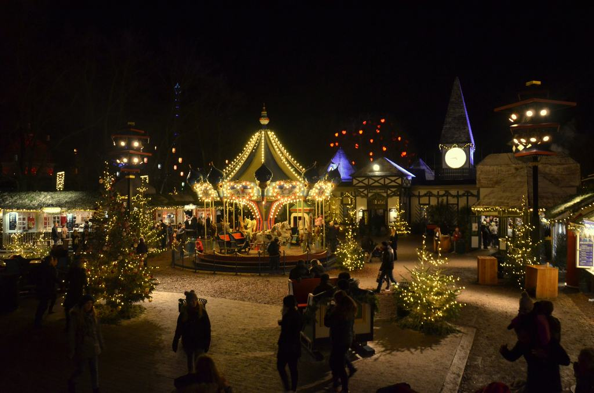
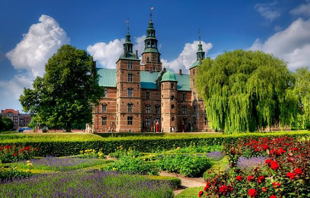
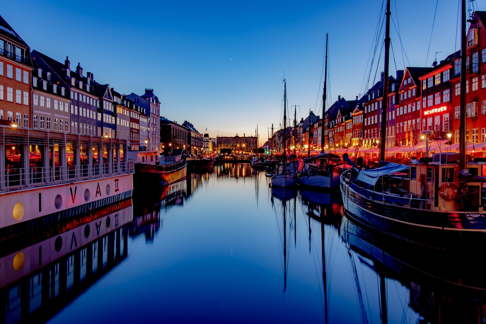
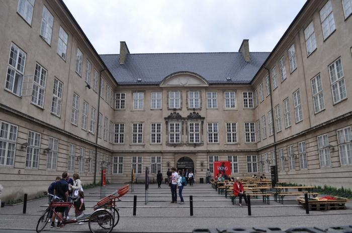

¿Qué hacer?
Inspírate y descubre las atracciones turísticas clásicas de Copenhague, los palacios, las gemas escondidas y mucho más que te inspirarán a salir y explorar Copenhague.
Visitar la Sirenita Den Lille Havfrue

La icónica estatua de La Sirenita es uno de los lugares más emblemáticos de Copenhague. Se encuentra en el puerto y es un símbolo de la ciudad.
Recorre el Parque Tivoli

El Parque Tivoli es uno de los parques de diversiones más antiguos del mundo. Ofrece atracciones, jardines hermosos y espectáculos en vivo.
Explora el Palacio de Rosenborg

Este castillo renacentista alberga la Joya de la Corona danesa y está rodeado por los hermosos Jardines del Rey.
Pasea por el canal de Nyhavn

Nyhavn es un encantador canal lleno de coloridos edificios históricos, restaurantes y bares. Es un lugar ideal para relajarse y disfrutar de la comida danesa
Museo Nacional de Dinamarca

Este museo ofrece una visión completa de la historia y la cultura danesa, desde la Edad de Piedra hasta la actualidad.
Visita el Museo Nacional de Arte
Este museo de arte cuenta con una impresionante colección de obras maestras, incluyendo pinturas de artistas famosos como Rembrandt y Picasso.